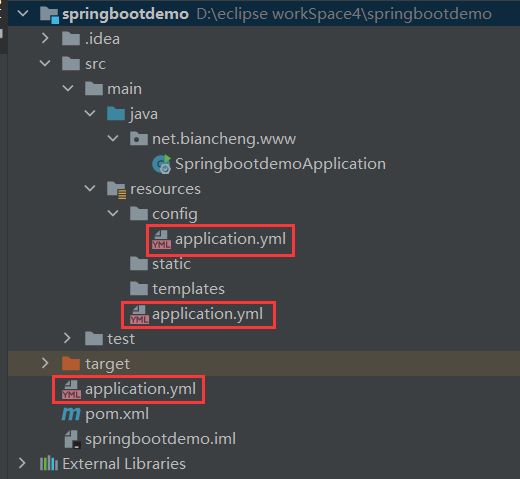
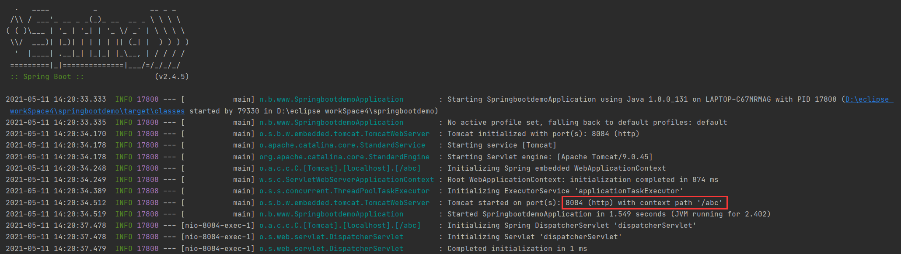
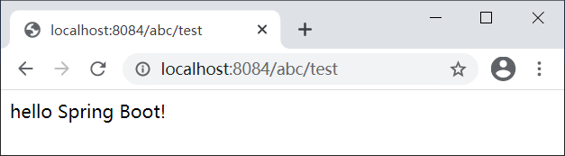

Spring Boot默认配置文件
通常情况下，Spring Boot 在启动时会将 resources 目录下的 application.properties 或 apllication.yml 作为其默认配置文件，我们可以在该配置文件中对项目进行配置，但这并不意味着 Spring Boot 项目中只能存在一个 application.properties 或 application.yml。
Spring Boot 启动时会扫描以下 5 个位置的 application.properties 或 apllication.yml 文件，并将它们作为 Spring boot 的默认配置文件。
所有位置的文件都会被加载，高优先级配置会覆盖低优先级配置，形成互补配置，即：
项目根路径下配置文件 application.yml 配置如下。
项目类路径下 config 目录下配置文件 application.yml 配置如下。
项目类路径下的 application.yml 配置如下。
在 net.biancheng.www.controller 包下创建一个名为 MyController 的类，代码如下。
启动 Spring Boot，查看控制台输出，如下图。
根据服务器端口和上下文路径，使用浏览器访问 http://localhost:8084/abc/test，结果如下图。
默认配置文件
Spring Boot 项目中可以存在多个 application.properties 或 apllication.yml。Spring Boot 启动时会扫描以下 5 个位置的 application.properties 或 apllication.yml 文件，并将它们作为 Spring boot 的默认配置文件。
- file:./config/*/
- file:./config/
- file:./
- classpath:/config/
- classpath:/
以上所有位置的配置文件都会被加载，且它们优先级依次降低，序号越小优先级越高。其次，位于相同位置的 application.properties 的优先级高于 application.yml。注：file: 指当前项目根目录；classpath: 指当前项目的类路径，即 resources 目录。
所有位置的文件都会被加载，高优先级配置会覆盖低优先级配置，形成互补配置，即：
- 存在相同的配置内容时，高优先级的内容会覆盖低优先级的内容；
- 存在不同的配置内容时，高优先级和低优先级的配置内容取并集。
示例
创建一个名为 springbootdemo 的 Spring Boot 项目，并在当前项目根目录下、类路径下的 config 目录下、以及类路径下分别创建一个配置文件 application.yml，该项目结构如下图。

图1：Spring Boot 项目配置文件位置
图1：Spring Boot 项目配置文件位置
项目根路径下配置文件 application.yml 配置如下。
#项目更目录下
#上下文路径为 /abc
server:
servlet:
context-path: /abc
项目类路径下 config 目录下配置文件 application.yml 配置如下。
#类路径下的 config 目录下
#端口号为8084
#上下文路径为 /helloWorld
server:
port: 8084
servlet:
context-path: /helloworld
项目类路径下的 application.yml 配置如下。
#默认配置 server: port: 8080
在 net.biancheng.www.controller 包下创建一个名为 MyController 的类，代码如下。
package net.biancheng.www.controller;
import org.springframework.web.bind.annotation.RequestMapping;
import org.springframework.web.bind.annotation.ResponseBody;
import org.springframework.web.bind.annotation.RestController;
@RestController
public class MyController {
@ResponseBody
@RequestMapping("/test")
public String hello() {
return "hello Spring Boot!";
}
}
启动 Spring Boot，查看控制台输出，如下图。

图2：Spring Boot 项目启动控制台输出
图2：Spring Boot 项目启动控制台输出
根据 Spring Boot 默认配置文件优先级进行分析：
- 该项目中存在多个默认配置文件，其中根目录下 /config 目录下的配置文件优先级最高，因此项目的上下文路径为 “/abc”；
- 类路径（classpath）下 config 目录下的配置文件优先级高于类路径下的配置文件，因此该项目的端口号为 “8084”；
- 以上所有配置项形成互补，所以访问路径为“http://localhost:8084/abc”。
根据服务器端口和上下文路径，使用浏览器访问 http://localhost:8084/abc/test，结果如下图。

图3：访问结果
图3：访问结果
关注公众号「站长严长生」，在手机上阅读所有教程，随时随地都能学习。内含一款搜索神器，免费下载全网书籍和视频。

微信扫码关注公众号